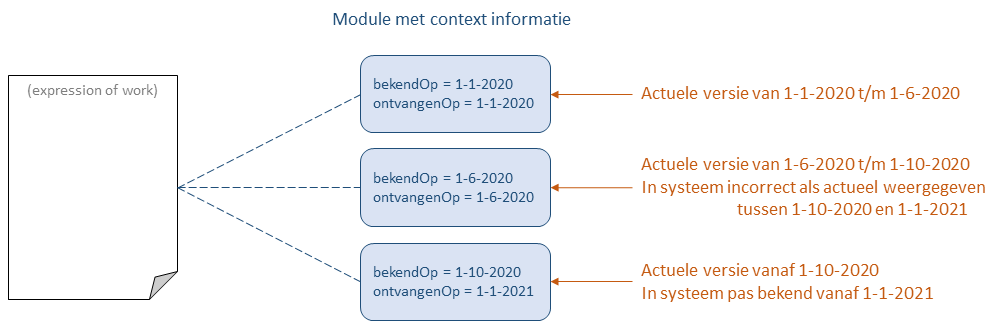

Tijdsafhankelijke (context)informatie
Contextinformatie
Het informatiemodel van STOP kent een modulaire structuur waarin voor een (geconsolideerde) instrument (besluit, regeling, informatieobject) of een versie daarvan drie soorten modules zijn gedefinieerd:
- Modules met informatie die uitsluitend de inhoud beschrijft
Bijvoorbeeld de tekst of een geografisch informatieobject. Deze informatie is onveranderlijk in de tijd. Als deze informatie gewijzigd wordt (of moet worden), ontstaat er een nieuwe versie of een nieuw instrument.
- Annotaties
Annotaties zijn modules met interpretatie of duiding van de (juridische) inhoud van een instrument die voor software te begrijpen is.
- Modules met contextinformatie
Dit is informatie die aspecten beschrijft die mede afhankelijk zijn van omgevingsfactoren en niet alleen van de eigenlijke inhoud. Deze informatie is tijdsafhankelijk: de contextinformatie kan wijzigen zonder dat de eigenlijke inhoud wijzigt. Bijvoorbeeld bevat een module voor een besluitversie het verloop van de besluitvormingsprocedure die wijzigt als gevolg van het bereiken van mijlpalen in die procedure. De geldigheid van een toestand wijzigt omdat er een nieuwe (opvolgende) toestand ontstaat. En een module met verwijzingen naar een regeling wijzigt omdat er vanuit een nieuwe regeling naar de regeling verwezen wordt. De modules van deze soort staan genoemd bij de contextinformatie in het informatiemodel.
De inhoud van het eerste type module wordt op een unieke manier geïdentificeerd met de identificatie van de expression (voor een versie) of van een work (voor een instrument).
Voor een module met contextinformatie is dat niet voldoende: de "contextuele" tijdsaanduidingen bekendOp en ontvangenOp zijn nodig om aan te geven wanneer de inhoud van de module geldig is. Die tijdsaanduiding bestaat uit twee tijdstempels:
bekendOp is het moment waarop de informatie voor het eerst bekend werd. Voor publieke informatie is dat het moment waarop de informatie voor het eerst gepubliceerd werd. Voor informatie die voor een kleinere kring toegankelijk is (zoals de ondertekening van een besluit voordat het bekendgemaakt is) het moment waarop de informatie voor het eerst toegankelijk was.
ontvangenOp is het moment dat het systeem dat de STOP-module uitlevert voor het eerst over de informatie beschikte, mits dat een later tijstip was dan
bekendop. Als het systeem eerder over de informatie beschikte dan isontvangenOpgelijk aanbekendOp.

Het plaatje geeft een voorbeeld van een module met contextinformatie die op drie momenten is gewijzigd:
Op 1-1-2020 is de eerste versie van de module bekend geworden die ook meteen beschikbaar was in het systeem.
Op 1-6-2020 is een tweede versie ontstaan door het bekend worden van nieuwe informatie; ook hierover kon het systeem meteen beschikken.
Op 1-10-2020 is informatie bekend geworden die aanleiding geven tot een derde versie van de module. Het systeem beschikt pas op 1-1-2021 over die informatie en maakt pas op dat moment de derde versie aan. In de tijd tussen 1-10-2020 en 1-1-2021 heeft het systeem dus ten onrechte de tweede versie voor de meest recente versie van de informatie in de module gehouden.
Overigens zijn de tijdstempels geen unieke identificatie voor een versie van de module; ze kunnen dus niet als versienummer gebruikt worden. Zie de implementatie sectie voor een toelichting.
Gebruik voor tijdreizen
De tijdstempels sluiten aan bij de informatiebehoefte voor tijdreizen:
Als een tijdreis zoekt naar de informatie die bekend was op een bepaald moment
X(de waarde van debekendOptijdreisparameter), dan zijn voor de zoekresultaten alle versies van de module van belang die eenbekendOptijdstempel hebben kleiner dan of gelijk aanX.Als een tijdreis zoekt naar de informatie die het systeem bevatte op een bepaald moment
X(de waarde van debeschikbaarOptijdreisparameter), dan zijn voor de zoekresultaten alle versies van de module van belang die eenontvangenOp(en daarmee ook debekendOp) tijdstempel hebben kleiner dan of gelijk aanX. Als een systeem deontvangenOptijdstempel niet implementeert. dan zijn voor de zoekresultaten alle versies van de module van belang die eenbekendOptijdstempel hebben kleiner dan of gelijk aanX.Als een tijdreis meerdere relevante versies van een module oplevert, dan is het resultaat van de zoektocht de module met de meest recente
bekendOp. Als dat er meer zijn, dan wordt daaruit de versie gekozen met de meest recenteontvangenOp.
De meest recente versie kan verkregen worden door een tijdreis met als tijdreisparameters beschikbaarOp = bekendOp = nu uit te voeren.
Implementatie van de tijdstempels in een systeem
Bij de implementatie van een systeem dat STOP gebruikt voor de uitlevering van modules met contextinformatie spelen de vragen:
Moeten alle versies in de tijd van een module bewaard worden?
Zijn zowel
bekendOpalsontvangenOpnoodzakelijk, of is alleenbekendOpgenoeg?Wat is de granulariteit van een tijdstempel? Alleen een datum of ook de tijd meenemen?
Bij de beantwoording van de vragen wordt aangenomen dat het systeem geen cache is van de gegevens uit een ander bronsysteem; in dat geval moet het cache-systeem het gedrag van het bronsysteem overnemen.
Het antwoord op de eerste vraag wordt bepaald door de functionele eisen aan het systeem: moet het in staat zijn te kunnen tijdreizen? Als een eindgebruiker (of een ander systeem) een tijdreis kan maken en bijvoorbeeld kan vragen wat het systeem een jaar geleden aan informatie verstrekt zou hebben had, dan moeten wel meerdere versies bewaard worden. Als het voldoende is dat het systeem alleen over de meest recente versie van de module beschikt, dan is het antwoord nee. Het antwoord blijft nee als het systeem de STOP-informatie verstrekt aan een ander systeem dat wel kan tijdreizen, zoals toegelicht in de beschrijving van de uitwisseling van een module.
Overigens is STOP een uitwisselingsstandaard en geen datamodel voor een systeem. Als het antwoord op vraag 1 ja is, dan moet het systeem over alle informatie beschikken om de verschillende versies van de module te kunnen reproduceren. Intern kan de informatie op een andere manier georganiseerd zijn. Daarbij moet er rekening mee gehouden worden dat de waarde van een tijdstempel niet zonder meer een optelsom hoeft te zijn van de tijdstempels geassocieerd met de verschillende brokjes informatie in een versie van de module; het systeem kan op een bepaald moment informatie krijgen die ertoe leidt dat een brokje informatie uit de module verwijderd wordt. Dat leidt tot een versie van de module met een latere bekendOp/ontvangenOp dan de tijdstempels voor de overgebleven brokjes informatie. Bijvoorbeeld: stel dat de implementatie van de module procedureverloop in het systeem bestaat eruit dat aan elke procedurestap een bekendOp/ontvangenOp is gekoppeld. Als een versie van de module een fout bevat en daardoor onterecht een extra procedurestap heeft, dan ontstaat na het aanleveren van een correctie daarvan een procedureverloop module met als ontvangenOp het moment dat de stap verwijderd is. De ontvangenOp tijdstempel van de procedureverloop is dan niet gelijk aan de meest recente waarde van de ontvangenOp die aan de overgebleven procedurestap elementen is gekoppeld.
Het bijhouden van ontvangenOp is alleen noodzakelijk als het systeem de functionele eis kent om tijdreizen te ondersteunen waarbij te achterhalen is of het systeem op een bepaald moment onterecht de verkeerde informatie heeft getoond. De waarde van ontvangenOp wordt in dat geval bepaald door het moment dat het systeem de informatie heeft ontvangen die leidt tot een nieuwe versie van de module. Als dergelijke tijdreizen niet vereist zijn kan ontvangenOp weggelaten worden.
Bij veruit de meeste juridische vragen speelt de tijd geen rol. Een tijdreis waarbij gevraagd wordt wat in een publicatieblad gepubliceerd was op een bepaalde dag, dus gebaseerd op alle informatie die tot en met die dag is gepubliceerd, veronderstelt impliciet dat daarbij een tijdstip gebruikt wordt na het verschijnen van de publicatiebladen van die dag. Slechts bij uitzondering wordt regelgeving gepubliceerd die op een ander tijdstip gepubliceerd wordt en waarbij het tijdstip van belang is; een voorbeeld daarvan zijn vervoersverboden. Bij juridische vragen waar dat tijdstip een rol speelt zal altijd gekeken worden naar de inhoud en publicatietijd van de originele publicaties; dat zijn geen vragen waarvoor het tijdreismechanisme in STOP bedoeld is. Het is daarom voldoende om voor zowel bekendOp als ontvangenOp een datum te gebruiken, tenzij er om redenen anders dan ondersteunen van STOP strictere eisen gelden.
Omdat op een dag meerdere gebeurtenissen kunnen zijn die tot wijziging van de inhoud van een module kunnen leiden, zijn bij een granulariteit van een dag de tijdstempels onvoldoende om als unieke identificatie van de inhoud van een module (dus als een soort versienummer) te dienen.
Uitwisselen van een module met contextinformatie
Welke eisen aan de tijdstempels gesteld worden bij de uitwisseling van een module met contextinformatie zal afhangen van de functionele eisen van het ontvangende systeem, en worden vastgelegd in de specificatie van de API die is ingericht voor de uitwisseling van de STOP-module. Er zijn in de praktijk twee mogelijkheden.
Als het ontvangende systeem als een cache voor het uitleverende systeem functioneert (of geïnteresseerd is in de informatie exact zoals het uitleverende systeem die kent) dan zijn de eisen aan de tijdstempels voor de API gelijk aan die voor de implementatie van het uitleverende systeem. De API zal het karakter van een een synchronisatiemechanisme hebben.
In alle andere gevallen hoeft het uitleverende systeem alleen de bekendOp datum op te nemen bij de module die uitgewisseld wordt; het ontvangende systeem zal immers zelf de waarde van ontvangenOp bepalen. De waarde van bekendOp is dezelfde waarde als die de implementatie van het uitleverende systeem hanteert; het is dus niet de dag waarop de informatie daadwerkelijk uitgewisseld wordt. Dat is niet nodig omdat bekendOp staat voor het begin van een periode; als de meest recente versie van de module een bekendOp datum in het verleden heeft houdt dat in dat er sindsdien geen informatie meer bekend is geworden die tot herziening van de module heeft geleid. Of en wanneer een module uitgewisseld wordt zal afhangen van de functionaliteit van de betrokken systemen en de soort informatie die de module bevat; daar is geen algemene richtlijn voor te geven. Dat geldt ook voor de interpretatie van de waarde van bekendOp door het ontvangende systeem en de manier waarop de informatie uit de module met de al in het systeem aanwezige informatie gecombineerd wordt.